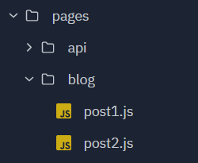
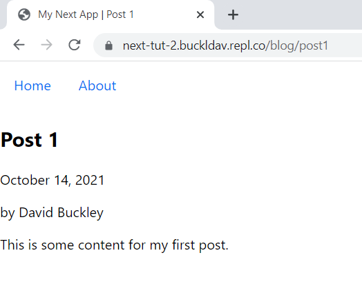
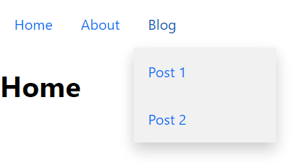
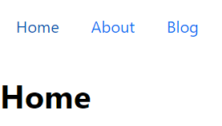

In the pages/ folder, create a blog/ folder with two files, post1.js
and post2.js.

Blog Folders
pages/
blog/
post1.js
post2.js
Creating Posts
Make Post 1 like the below markup. You can choose what text goes between the tags, but be sure to pick the
same tags in this example for this tutorial.
pages/blog/post1.js
import Head from"next/head"import Image from"next/image"exportdefaultfunctionPost1() {return (<main><Head><title>My Next App | Post 1</title><metaname="description"content="Generated by create next app"/><linkrel="icon"href="/favicon.ico"/></Head><article><header><h1>Post 1</h1><p>October 14, 2021</p><p>by David Buckley</p></header><div><p>This is some content for my first post.</p></div></article></main> )}
Once Post 1 is complete, copy + paste the markup and modify text for Post 2. You can navigate to
/blog/post1 and /blog/post2 in your browser to see them.

Post Page
Interjection - ID selector
So far, we have been mostly using element and class selectors in CSS. Now it’s time to introduce the ID
selector. ID’s can be used to identify and select a single element. Here’s an example.
In our project, we are using an ID as part of a dropdown menu to list our blog posts in the navigation. The
ID will allow us to identify the element containing the dropdown in our JavaScript and then show and hide it
as appropriate.
Creating a Dropdown in our
Navigation
We could list all of our blog posts horizontally in our navigation, but this would not scale well. Instead,
we will make a dropdown menu where all blog posts are listed. Here’s what the final product will look like:

Nav Hover Result
components/Nav.js
Remember how components can have interactivity (written in JavaScript)? We are going to add a
dropdown() function that runs anytime the dropdown menu is toggled (shown/hidden).
NOTE: This way of selecting the element using getElementById in the dropdown()
function is not “Reactive”, meaning that there are more idiomatic ways to do this in a React or Next
project (check out useState in React’s
docs). However, this way of toggling a CSS class will work in any frontend project, so that’s why it
is presented.
This is what your entire Nav.js file should look like:
We need to add some styles to our CSS module in order to make this work. Add the below code after the
existing styles in our CSS file.
/* The container <div> - needed to position the dropdown content */.dropdown {position:relative;display:inline-block;}/* Dropdown Button */.dropBtn {display:inline-block;color:#0070f3;padding:1em;background-color:transparent;border:none;font-size:inherit;font-family:inherit;cursor:pointer;}/* Dropdown Content (Hidden by Default) */.dropContent {display:none;position:absolute;background-color:#f1f1f1;min-width:160px;box-shadow:0px8px16px0pxrgba(0,0,0,0.2);z-index:1;}/* Links inside the dropdown */.dropContent a {display:block;}/* Show the dropdown menu (use JS to add this class to the .dropContent container when the user clicks on the dropdown button) */.show {display:block;}
We’ve already talked about CSS Display if you are in App & Web Development class at Merit.
display: block means the element takes up the full width of its parent.
display: inline-block means the element is rendered inline with its adjacent elements, but
can have Box Model styling applied to it. Note that .dropContent has
display: none;, meaning that the element is not rendered. If the element has the classes
dropContent and show, the display: block rule on the
show class overrides the display: none, thus rendering the dropdown menu on the
screen. That’s why the JavaScript function dropdown() in our Nav component toggles the
show class.
By default, elements have position: static, meaning they are rendered one after another.
position: relative and position: absolute can be used together to render
elements on top of the static flow (like our dropdown menu).
If these two position rules are used like in the example above, the child element will be rendered below
the parent element but on top of the rest of the page.
To finish things off, let’s add some pseudo selectors to our navigation CSS. Pseudo selectors allow for us to
change the style depending on the state of the element.
The :hover pseudo selector is triggered whenever the mouse hovers the element.
.nav a:hover,.nav button:hover {color:#0053b3;}

Nav Hover Result
The :focus and :active pseudo selectors are for elements that have been clicked on
(like our dropdown button).
In this part, we created some blog post pages, add our first bit of JavaScript logic to a component, and
learned some CSS tricks to help enhance our navigation.